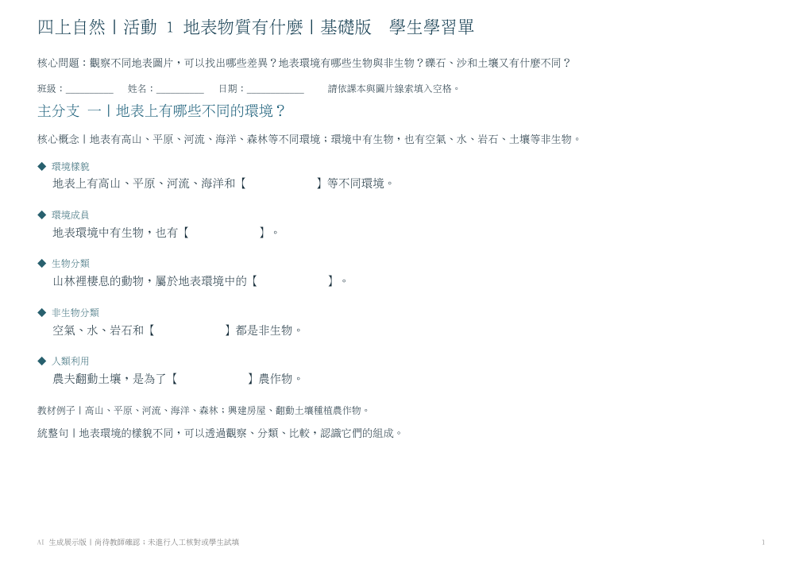
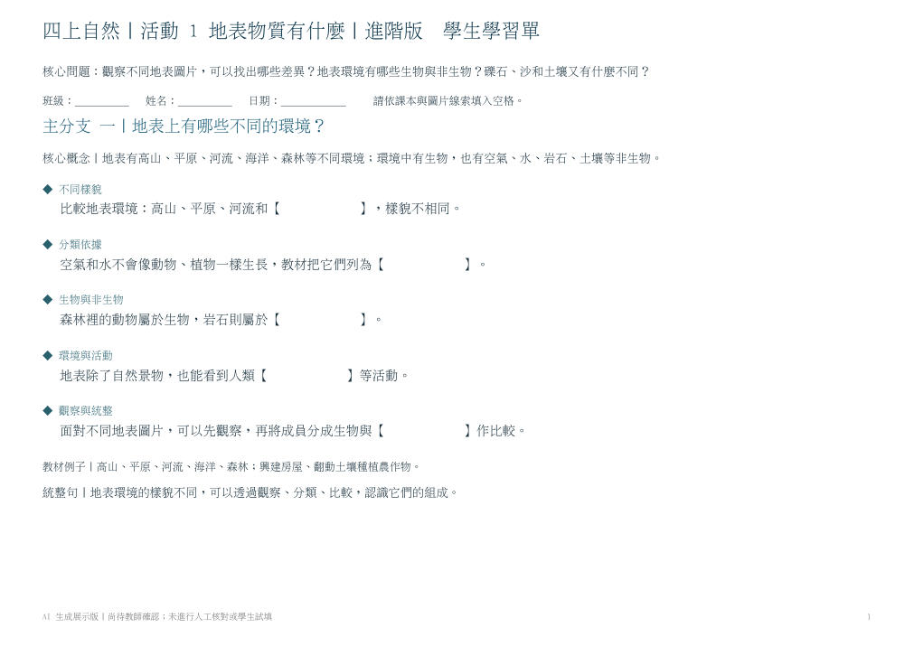
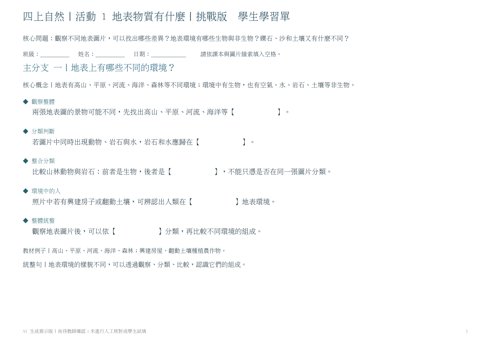

01 / 辨認與理解
基礎版
短句、明確線索與必要句型，先確認核心概念。

看學生版 ↗教師答案
開啟基礎版教師答案 PDF ↗學生版 3 頁 · 教師答案 3 頁
前期文字試跑 · 保留不同版本
先看作品，再想：學生在做什麼？你的學生需要多少提示？不用急著選出最好的一版。
四年級自然地表物質有什麼設定：每版16格文字試跑存檔，非圖片式成果第七關已改為直接生成圖片式學習單。下列六份 PDF 是前期文字試跑的存檔，不是本關的圖片成果。回工作坊查看圖片參考與出圖指令 ↗
三版都保留同一課與三個主分支，改變的是提示與思考要求。學生版與教師答案分開。
01 / 辨認與理解
短句、明確線索與必要句型，先確認核心概念。

看學生版 ↗學生版 3 頁 · 教師答案 3 頁
02 / 比較與連結
把概念連起來，練習比較、順序與教材支持的關係。

看學生版 ↗學生版 3 頁 · 教師答案 3 頁
03 / 推論與說明
整合教材線索，除填空外，再用兩題短答說明理由。

看學生版 ↗學生版 4 頁 · 教師答案 4 頁
學生要做什麼？
是在找詞、連結概念，還是要用線索解釋？
提示夠不夠？
遮住答案試一試。哪些地方太直接？哪些地方猜不到？
適合誰？
同一個年級，也可能需要不同的支持。